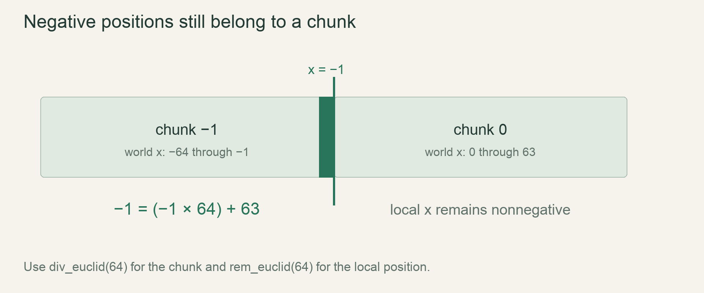

M0 / FoundationLesson 28 of 100 · ~5 min reading + build time
Split storage into 64 by 64 chunks
Map global cell positions into64×64 chunks correctly, including positions left of the origin.
Previously: Store chunks by coordinate with a map. Keep that working result available before starting this lesson.
Why we need this now
Chunks let us bound allocation and reuse a fixed-size cell buffer. The subtle part is not allocating4096 slots; it is agreeing which chunk contains a negative coordinate. Euclidean quotient and remainder give a consistent answer that ordinary truncating division does not.
Your result: Map global cell positions into64×64 chunks correctly, including positions left of the origin.

01Derive chunk and local coordinates
For nonnegative x, chunk_x counts how many complete groups of64 precede the cell, while local_x is its offset inside that group. x63 belongs to chunk0 at local63; x64 belongs to chunk1 at local0. The same idea must continue to the left of zero.
The cell immediately left of x0 is x-1. It belongs to chunk-1 at local63, not chunk0 at local-1. That keeps every local coordinate inside0..64 and every chunk a complete fixed-size rectangle. Draw the boundary on a number line before choosing an operator.
02Use Euclidean operations for signed world positions
Rust integer / truncates toward zero, which gives an inconvenient quotient for negative chunk mapping. Use div_euclid(64) and rem_euclid(64) with a positive chunk size. The quotient identifies the containing chunk and the remainder is nonnegative.
The round-trip equation is world_x=chunk_x*64+local_x. Test it for -65,-64,-1,0,63,64. This equation is a stronger check than a few printed labels because it proves the decomposition reconstructs each tested input. Use suitable world integer widths and checked range assumptions in production.
03Allocate one owned buffer per chunk
A Chunk owns4096 cells, indexed locally by local_y*64+local_x under a declared row convention. World storage maps a chunk key to that buffer. The global query first decomposes coordinates, finds or requests the chunk, and then addresses the local slot.
Keep missing chunk handling explicit. A query cannot silently fabricate changed data or treat missing storage as a solid wall in some paths and air in others. The generation/loading policy determines when a missing chunk becomes resident; movement and rendering should use that policy consistently.
04Preserve movement across the storage seam
Place a grain at the last local row of one chunk with free space in its neighbour. One logical move must transfer state across the boundary and retain its moved marker. Per-chunk reset or an unchecked local index can duplicate matter, panic or accelerate the grain.
Chunking is storage organization, not a new physical law. The grain should follow the same rule whether a boundary lies under it or not. Keep the first chunk traversal sequential and explicit; parallelism comes only after the cross-chunk footprint proof. Measure the extra lookup cost later instead of guessing that chunks are automatically faster.
Read → predict → run → change
Walk through the working example
Complete focused example — src/main.rs
Download this worked example ↧
const CHUNK:i32=64;
fn split_coordinate(world:i32)->(i32,i32) {
(world.div_euclid(CHUNK),world.rem_euclid(CHUNK))
}
fn main() {
for world in [-65,-64,-1,0,63,64] {
let (chunk,local)=split_coordinate(world);
assert!((0..CHUNK).contains(&local));
assert_eq!(chunk*CHUNK+local,world);
println!("{world}: chunk={chunk}, local={local}");
}
}Read what each part does
- The worked example is a coordinate proof, not a complete chunk manager.
- A positive fixed chunk size makes the remainder domain clear.
- The same decomposition can be reused by drawing, painting and simulation queries.
Expected result
-65 maps to(-2,63), -64 to(-1,0), -1 to(-1,63),0 to(0,0),63 to(0,63),64 to(1,0).Exact version numbers, paths and compiler wording may differ. Compare the behavior and file locations, not incidental output formatting.
Prediction · repair · transfer
Exercises you actually do
Write a prediction or make an attempt before opening a solution. Use the hint if stuck; then compare reasoning and verify with the stated check. A different implementation is fine when it satisfies the same contract.
Apply both axes
Decompose world position(-1,64) into a chunk key and local coordinates.
Need a hint?
Each axis uses the same quotient/remainder rule.
Worked solution
The chunk key is(-1,1) and local position is(63,0). Its local flat index under row-major local storage is63. Coordinate orientation must remain explicit for the vertical axis.
How to verify your result
Both axis decompositions round-trip to the original position.
Expose truncation
Replace div_euclid/rem_euclid with / and % for x-1.
Need a hint?
Observe the negative local remainder.
Worked solution
Truncating arithmetic gives quotient0 and remainder-1. That violates the nonnegative local-index contract, explaining why the Euclidean operations are chosen.
How to verify your result
The counterexample justifies the operator choice.
Move across the seam
Build two adjacent chunk fixtures and cross the local63 boundary.
Need a hint?
The moved marker must travel with the material.
Worked solution
Query the destination through global coordinates, perform one paired transfer, and assert count and maximum displacement over the complete logical tick.
How to verify your result
Chunk boundaries do not alter the movement rule.
When it goes wrong
Start with the observed symptom. Change one assumption at a time instead of pasting fixes until the error disappears.
Negative world coordinates panic on indexing
What is happening: A negative local remainder was converted into usize.
Try this: Use Euclidean decomposition and validate the local range.
The grain duplicates at the boundary
What is happening: Source and destination were treated as separate independent paint writes.
Try this: Perform one ownership-preserving transfer across both chunks.
A seam makes grains move twice
What is happening: The next chunk treats the moved state as fresh.
Try this: Retain the marker across all chunk phases in the same tick.
Explain it without the example
Why use Euclidean division for negative world coordinates?
Reasoning to compare
It gives nonnegative local offsets with the correct containing chunk. Truncation toward zero puts negative positions in the wrong chunk.
Self-check only: test a prediction or ask your tutor if anything still feels arbitrary.
Finish with evidence
Columns -1, 0, 63, and 64 map correctly. Moving across a boundary loses or duplicates no material.
Make one small variation without copying: predict it, run it and explain any difference. On another day, repeat one exercise from memory before starting the next lesson. Ask your tutor about any step you can execute but cannot explain.
This is an attempt marker, not a grade. Learning records are written only after demonstrated understanding.
Primary sources for this lesson
Use sources to verify the mechanism. The lesson itself supplies the instructions; the links are not a substitute for teaching them.